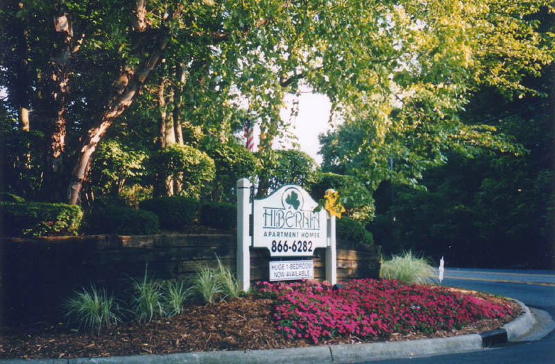
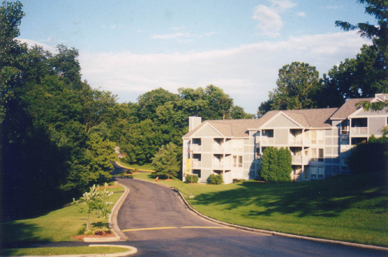
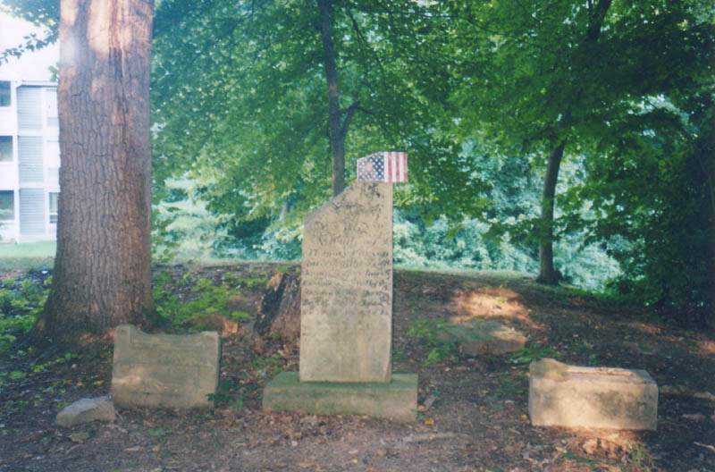

Ghost towns often leave their mark on the landscape in the form of the name of a road or a park. Sometimes a neighborhood in a larger city, such as Collinwood in Cleveland, had its beginnings as an independent municipality. On the east side of Columbus, the ghost town of Hibernia is recalled by a large apartment complex of the same name.

Hibernia Apartments occupies the southeast corner of East Main and Noe-Bixby Road, just inside I-270, on the east side. The village of Hibernia is described as being along the road near the "crossings of Walnut Creek." Whether or not the apartments occupy the exact spot where the town used to be is hard to say, since Walnut Creek is located a little bit west of Noe-Bixby.

One interesting indicator is the small Carlisle Cemetery, located deep within the apartment complex. The management of the apartment complex maintains the cemetery, but it's been badly damaged over the years and has very few original stones still intact.

Hibernia was never much of a town. As a matter of fact, it was never intended to be a town, but when property owner Thomas Armstrong "disposed of" a few lots along the road, four or five families built homes there. The grouping eventually got its own post office, established August 25, 1849, and began to be referred to by name. Although the post office closed in January of 1857, the town lingered in some form. As recently as the 1940s Columbus bus lines on Route 40 East had a stop in Hibernia, Ohio before they got to Reynoldsburg.
The apartments are a fitting end for this ghost town, preserving the name and a different sort of community, even though none of the original buildings remain.
Carlisle Cemetery
Back
Sources
Helwig, Richard M. Ohio Ghost Towns No. 53: Franklin County. Galena, OH: The Center for Ghost Town Research in Ohio, 1988.